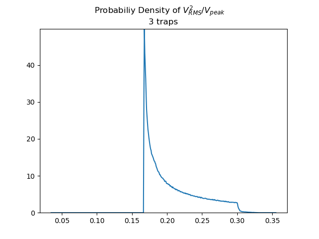

Other¶
Proposed Upgrades¶
Write a standard procedure to save any waveform to maintained collection of HDF5 database files, organizing by parameters. Include an option for bypassing the automatic saving of each waveform.
Todo
Complete ability to configure triggers.
(The original entry is located in C:\Users\aronw\Desktop\wavgen\wavgen\card.py:docstring of wavgen.card.Card.setup_channels, line 14.)
Todo
Add support for simultaneous use of both channels.
(The original entry is located in C:\Users\aronw\Desktop\wavgen\wavgen\card.py:docstring of wavgen.card.Card.setup_channels, line 15.)
Todo
Integrate button for saving optimized waveforms.
(The original entry is located in C:\Users\aronw\Desktop\wavgen\wavgen\card.py:docstring of wavgen.card.Card._run_cam, line 18.)
Todo
Finish this section.
(The original entry is located in C:\Users\aronw\Desktop\wavgen\docs\source\how-to\gui.rst, line 8.)
Art¶
When forming a superposition of pure tones, we had a choice for each tones magnitude & relative phase. The former were chosen to optimize for homogeneous trap intensities, but the latter were chosen to correct a more subtle issue. When a multitude of tones are superimposed upon each other, inevitably many of those tones will constructively align, forming a massive amplitude peak. This may not necessarily happen for various sets of relative phases.
For a given superposition, we consider the ratio: Mean Squared Amplitude over Peak Value. We optimize the relative phases to maximize this quantity. In the process of developing the method, we discovered a few intriguing structures & validated some hunches.

Trends in Chances¶
We had a feeling that the maximum achievable ratio would decrease with number of tones. The below 2 graphs show that your chances of achieving a higher ratio decreases with number of tones.

Although that is not satisfactory. Our method of optimization is to randomly sample the space of relative phases, holding onto phases that achieve the best ratio. All we have shown is that you are less likely to find a better ratio for a greater number of tones. Below is the best achieved ratio vs. number of tones; although one must keep in mind that we randomly sampled each case the same number of times. It is possible that we are not achieving even close to the best for the cases with many tones, just that the chances of achieving a high ratio is *very unlikely